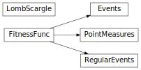

Astrostatistics Tools (astropy.stats)¶
Introduction¶
The astropy.stats package holds statistical functions or algorithms used
in astronomy and astropy.
Getting Started¶
Most tools are fairly self-contained, and include relevant examples in their docstrings.
Using astropy.stats¶
More detailed information on using the package is provided on separate pages, listed below.
See Also¶
scipy.statsThis scipy package contains a variety of useful statistical functions and classes. The functionality in
astropy.statsis intended to supplement this, not replace it.
astropy.visualization.hist()The
histogram()routine and related functionality defined here are used within theastropy.visualization.hist()function. For a discussion of these methods for determining histogram binnings, see Choosing Histogram Bins.
Reference/API¶
astropy.stats Package¶
This subpackage contains statistical tools provided for or used by Astropy.
While the scipy.stats package contains a wide range of statistical
tools, it is a general-purpose package, and is missing some that are
particularly useful to astronomy or are used in an atypical way in
astronomy. This package is intended to provide such functionality, but
not to replace scipy.stats if its implementation satisfies
astronomers’ needs.
Functions¶
akaike_info_criterion(log_likelihood, ...) |
Computes the Akaike Information Criterion (AIC). |
akaike_info_criterion_lsq(ssr, n_params, ...) |
Computes the Akaike Information Criterion assuming that the observations are Gaussian distributed. |
bayesian_blocks(t[, x, sigma, fitness]) |
Compute optimal segmentation of data with Scargle’s Bayesian Blocks |
bayesian_info_criterion(log_likelihood, ...) |
Computes the Bayesian Information Criterion (BIC) given the log of the likelihood function evaluated at the estimated (or analytically derived) parameters, the number of parameters, and the number of samples. |
bayesian_info_criterion_lsq(ssr, n_params, ...) |
Computes the Bayesian Information Criterion (BIC) assuming that the observations come from a Gaussian distribution. |
binned_binom_proportion(x, success[, bins, ...]) |
Binomial proportion and confidence interval in bins of a continuous variable x. |
binom_conf_interval(k, n[, conf, interval]) |
Binomial proportion confidence interval given k successes, n trials. |
biweight_location(a[, c, M]) |
Compute the biweight location for an array. |
biweight_midvariance(a[, c, M]) |
Compute the biweight midvariance for an array. |
bootstrap(data[, bootnum, samples, bootfunc]) |
Performs bootstrap resampling on numpy arrays. |
circcorrcoef(alpha, beta[, axis, ...]) |
Computes the circular correlation coefficient between two array of circular data. |
circmean(data[, axis, weights]) |
Computes the circular mean angle of an array of circular data. |
circmoment(data[, p, centered, axis, weights]) |
Computes the p-th trigonometric circular moment for an array of circular data. |
circvar(data[, axis, weights]) |
Computes the circular variance of an array of circular data. |
freedman_bin_width(data[, return_bins]) |
Return the optimal histogram bin width using the Freedman-Diaconis rule |
histogram(a[, bins, range, weights]) |
Enhanced histogram function, providing adaptive binnings |
jackknife_resampling(data) |
Performs jackknife resampling on numpy arrays. |
jackknife_stats(data, statistic[, conf_lvl]) |
Performs jackknife estimation on the basis of jackknife resamples. |
knuth_bin_width(data[, return_bins, quiet]) |
Return the optimal histogram bin width using Knuth’s rule. |
mad_std(data[, axis]) |
Calculate a robust standard deviation using the median absolute deviation (MAD). |
median_absolute_deviation(a[, axis]) |
Compute the median absolute deviation. |
poisson_conf_interval(n[, interval, sigma, ...]) |
Poisson parameter confidence interval given observed counts |
rayleightest(data[, axis, weights]) |
Performs the Rayleigh test of uniformity. |
scott_bin_width(data[, return_bins]) |
Return the optimal histogram bin width using Scott’s rule |
sigma_clip(data[, sigma, sigma_lower, ...]) |
Perform sigma-clipping on the provided data. |
sigma_clipped_stats(data[, mask, ...]) |
Calculate sigma-clipped statistics from data. |
signal_to_noise_oir_ccd(t, source_eps, ...) |
Computes the signal to noise ratio for source being observed in the optical/IR using a CCD. |
vonmisesmle(data[, axis]) |
Computes the Maximum Likelihood Estimator (MLE) for the parameters of the von Mises distribution. |
vtest(data[, mu, axis, weights]) |
Performs the Rayleigh test of uniformity where the alternative hypothesis H1 is assumed to have a known mean angle mu. |
Classes¶
Events([p0, gamma, ncp_prior]) |
Bayesian blocks fitness for binned or unbinned events |
FitnessFunc([p0, gamma, ncp_prior]) |
Base class for bayesian blocks fitness functions |
LombScargle(t, y[, dy, fit_bias, center_data]) |
Compute the Lomb-Scargle Periodogram |
PointMeasures([p0, gamma, ncp_prior]) |
Bayesian blocks fitness for point measures |
RegularEvents(dt[, p0, gamma, ncp_prior]) |
Bayesian blocks fitness for regular events |
Class Inheritance Diagram¶
